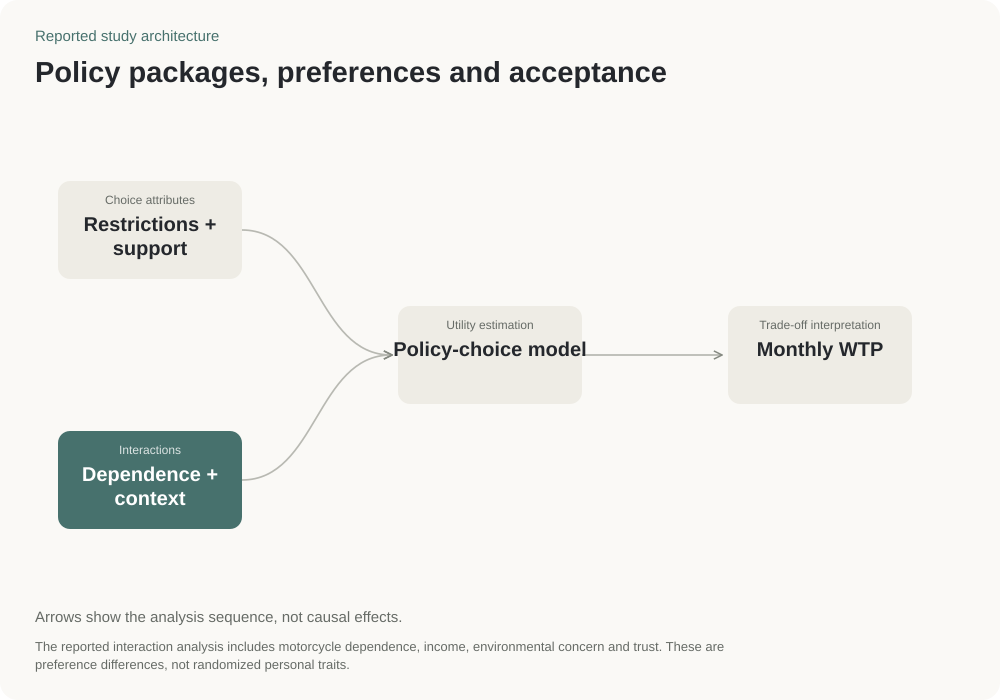

Transport policy · Hanoi
Motorbike phase-out policy
Compared how people valued travel restrictions and support when considering a move away from petrol motorbikes.
Policy researchSurvey designComparing public preferences
Estimates of which policy features people favored or disliked in the choice tasks.
CIEMB 2025 manuscript

- Sample
- 320 respondents
- Method
- Comparing policy packages
- Context
- Hanoi transport transition
Research question
What would make a transport change easier to accept?
Hanoi respondents chose between packages combining travel restrictions, public transport and financial support.
Key finding
Restrictions were disliked; support was valued
Vehicle restrictions received negative estimated values; better public transport, reinvestment and electric-motorcycle grants received positive values.
Practical use
What policy teams could learn
Discuss restrictions and support together. Survey preferences do not guarantee the same behavior in practice.
Read with careThe study does not predict traffic, compliance or the effects of a particular law. Suggested policy sequencing is an interpretation of the findings.
Compare the restrictions with the support offered.
Positive amounts indicate a feature respondents favored in the choice tasks; negative amounts indicate one they disliked. Amounts are estimated values in VND per month, not actual payments or a policy budget.
Restrict fossil-fuel motorcycles
-68,450 VND / month
Restrict all fossil-fuel vehicles
-135,220 VND / month
Public transport +15%
51,780 VND / month
Public transport +30%
84,150 VND / month
Fares −25%
34,260 VND / month
Fares −50%
76,920 VND / month
Green space +20%
102,550 VND / month
Green space +40%
153,830 VND / month
Unguarded park & ride
17,110 VND / month
Guarded park & ride
59,840 VND / month
Support pass
85,470 VND / month
Electric-motorcycle grant
188,120 VND / month
Revenue reinvestment
68,410 VND / month
Reinvestment + oversight
102,550 VND / month
Restrict fossil-fuel motorcycles
This restriction has a negative reported valuation. Compare it with the positive support attributes, while keeping the underlying package specification intact.
Respondent interactions
Reported Table 4 values. Scale coding is required for quantitative interpretation.
Existing CIEMB manuscript-table reconstruction: Table 5 values; Table 4 interactions.
Methods & tools

Source & status
CIEMB 2025 manuscript